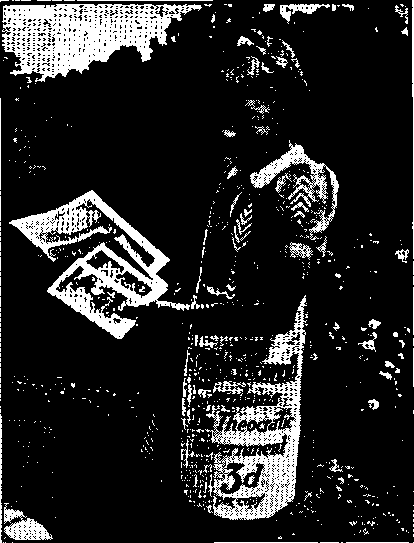
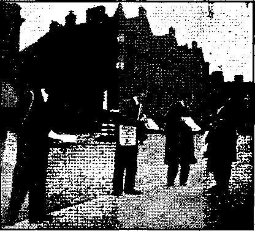
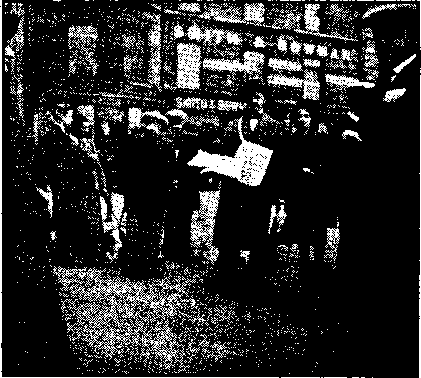

Edinburgh Theocratic Convention
Counsel by J. F. Rutherford
Under the Totalitarian Flag
British Comment
Published every other Wednesday by
WATCHTOWER BIBLE AND TRACT SOCIETY, INC.
117 Adams St., Brooklyn, N. Y„ U. S. Af
Editor Clayton J. Woodworth
Business Manager Nathan II. .Knorr
Five Cents a Copy
31 a year in the United States $1.25 to Canada and all other countries
NOTICE TO SUBSCRIBERS
Remittances: For your own safety, remit by postal or express money order. When coin or currency is lost in the ordinary mails, there is no redress. Remittances from countries other than those named below may bo made to the Brooklyn office, but only by International postal money order.
Receipt of a new or renewal subscription will bo acknowledged only when requested. Notice of Expiration is sent with the journal one month before subscription expires. Please renew promptly to avoid loss of copies. Send change of address direct to us rather than to the post office. Your request should roach us at least two weeks before the date of issue with which it is to take effect. Send your old as well as the new address. Copies will not be forwarded by the post office to your new address unless extra postage is provided by you.
Published also in Afrikaans, Bohemian, Danish, Dutch. Finnish, French, German. Greek. Hungarian. Japanese, Norwegian, Polish, Portuguese, Spanish, Swedish, Ukrainian; also special Australian edition in English.
OFFICES FOR OTHER COUNTRIES
England St Craven Terrace. London, W. 2
Canada 40 Irwin Avenue, Toronto 5, Ontario
Australia 7 Beresford Road, Strathfield. N.S.W. South Africa 623 Boston House, Cape Town
Entered as second-class matter at Brooklyn, N. Y., under the Act of March 3, 1873.
Noland urn
Children Bearing Witness
♦ On November 24 a zone assembly was held at Los Angeles, California, attended by the prospective “great multitude”. At the assembly 497 children publicly declared their devotion to the great Theocracy, thus hearing witness to the name of the great Theocrat and Uis King. The following telegram relating to that as- I sembly will be of interest to those who have children who love Jehovah: <
The zone assembly at Shrine. Auditorium । unanimously send to you their greetings and v enthusiastic appreciation of your message, j Sixty-one hundred fifty in attendance. Four hundred ninety-seven children declared publicly that they have taken their stand on the side of the great Tiieocrat, His King and His kingdom. Wc unitedly raise our hearts asking Jehovah’s continued guidance upon you and upon the onward march of The Theocracy. —Zone Assembly, Los Angeles, November 24.
Some Priestly Opinions
♦ In response to requests made of 1,500 priests as to how the Homan Catholic religion is standing up on current strain, there was considerable blame of Irish Catholic politicians like the crook Judge Manton; some thought the church lost more than it gained by the deal which resulted in Roosevelt’s sending Taylor to the Vatican ; while a New England priest said of his congregation of French and Polish descent: “They deeply resent Italy’s entrance into the war. They are upset by the pope’s inability to hold his own people away from Hitler and Stalin. Many are now missing mass. The mention of the pope’s name will arouse many to boos. They have torn his picture from the walls.”
Kennedy Persona Non Grata
♦ Kennedy, Papal ambassador to Britain, (paid by Uncle Sam) ought certainly to be persona non prata to Britain, if, as alleged, he boasted Britain is licked.
■ CONSOLATION
“And in His name shall the nations hope.”—Matthew 12:21, A.R.V.
Volume XXII
Brooklyn, N. Y., Wednesday. December 25. 1940
Number 555
Mobocracy (ln Two Parts—Part 2)
THE Protestant Press Bureau of Ilford, England, quotes two Jesuit fathers (same organization that invited Roosevelt and Willkie to attend a mass commemorating the 400th anniversary thereof, September 20, according to the New York Daily Mirror of September 13, 1940) as imagining the Lord's place of punishment of “Purgatory-’ as follows:
“Yon must then conceive purgatory, to be a vast, darksome and hideous chaos, full of fire and flames, in which the souls arc kept close prisoners until they have satisfied for all their misdemeanours, according to the estimate of Divine Justice. For God [Rome) has made choice of this element of fire wherewith to punish souls. Iweause it is the most active, piercing, sensible, and insupportable of all others.”
On page 135 the Jesuit exclaims,
“Good God! how the great saints and doctors astonish me when they treat of this fire, ami of the pain of sense as they call it! For they peremptorily pronounce that the fire that purges those souls, those lioth happy and unhappy souls, surpasses all the torments that are to be found in the miserable life of man, or are possible to be invented ; for so far they go. Out of which assertion it clearly follows that the furious fits of stone, fever, or raging gout, the tormenting colic, with all the horrible convulsions of the worst diseases, nay, though you join racks, gridirons, boiling oil, wild beasts, and a hundred horses drawing several ways and tearing one limb from another, with all the hellish devices of the most barbarous and cruel tyrants, all this does not reach the least part of the mildest pains of purgatory.”
The Scriptures declare that “God is love” and that “the dead know not any thing”. (1 John 4:8; Ecclesiastes 9:5,10) “Purgatory” is nowhere mentioned in the Bible, and “hell" is shown to mean the grave. With this in mind, note the horrors invented by the Hierarchy:
Few Englishmen are aware of the infamous publications written with this object [of scaring the children] that are circulated by Catholic priests among the poor. I have before me a tract “for children and young persons” called Sight of Hell, by Rev. J. Furniss, C.Ss.R. It is a detailed description of the dungeons of hell, and a few sentences may serve as an example: “Sec! on the middle of that red-hot floor stands a girl; she looks about sixteen years old. Her feet are bare. She has neither shoes nor stockings . . . Listen! she speaks. She says: ‘I have been standing on this burning floor for years. Ix»ok at my burnt and bleeding feet. Let me go off this burning floor for one moment ... * The fourth dungeon is the toiling kettle ... in the middle of it there is a boy ... His eyes are burning like two burning coals. Two long flames come out his ears . . . But listen! there is a sound like a kettle boiling. The blood is bubbling and boiling in his head .. . . The fifth dungeon is the red-hot oven . . . The little child is in this red-hot oven. Hear how it screams to come out. Sec how it turns and twists itself in the fire. It beats itself against the roof of the oven. It stamps its little feet on the floor . . . Ood was very good to this child. Very likely God saw that it would get worse and worse, and would never repent, and would have to be punished much worse in hell. So God in his mercy called it out of the world in its early childhood.” •
This is from a quotation by Protestant Press Bureau from W. E. H. Lecky^ History of European Mortils, Vol, II, ' page 94.
The acts of this unholy and blasphemous organization are thus in exact accord with the horrors they have conceived God as guilty of. Is it not in keeping that the same organization should defame God’s holy name and also persecute in the most fiendish manner all of His witnesses ? Castration, rack, gridiron, torture chamber, in the hands of the most vicious mobochacy, is what America is headed for. Let the Legion, Roosevelt, and any other who wishes, hobnob with these bloody tormentors of the righteous. Let them arm themselves in the most invincible manner. Let them conquer the earth. Let them heap up lies and sanctify war. They are certain to perish. “I will slay the last of them with the sword; he that fleeth of them shall not [escape (R.F.)], and he that escapeth of them shall not be delivered. Though they dig into hell [Sheol; that is, dig holes in the earth to shield them from the bombs of airplanes and gas attacks], thence shall mine hand take them; though they climb up to heaven [take to the air in planes to escape from the trouble], thence will I bring them down; and though they hide themselves in the top o'f Carmel [rocky caves in the mountains], I will search and take them out thence; and though they be hid from my sight in the bottom of the sea [in submarine boats], thence will I command the serpent [the bringer-of evil and calamity], and he shall bite them [destroy them]; and though they go into captivity before their enemies, thence will I command the sword [Christ, the Executioner of Jehovah’s commands], and it shall slay them; and I will set mine eyes upon them for evil, and not for good.”—Amos 9:1-4, with brackets quoted from the Watchtower magazine, issue of September 1, 1940.
The stage is about ready for the last act. The religious, political and commercial elements are as thick as thieves and acting with one accord. Allied with them is the “evil servant” company, those once companions of Jehovah’s, witnesses and now their bitterest enemies. This traitor class is doing its part to besmirch Jehovah’s name and cruelly scourge the Lord’s servants with the vilest falsehoods. Let this gang all get together and do their worst. The Lord will take them in His stride. “Associate yourselves, 0 ye people, and ye shall be broken in pieces; and give ear, all ye of far countries; gird yourselves, and ye shall be broken in pieces; gird yourselves, and ye shall be broken in pieces. Take counsel together, and it shall come to nought; speak the word, and it shall not stand: for God is with us.”—Isaiah 8: 9,10,
Many have attempted to excuse themselves from responsibility by saying that Jehovah’s witnesses are trouble-makers, hate-peddlers, and that they would not be in trouble if they would take some other course of action. Such words will not excuse them' before the Lord. If the message of Jehovah causes those who hear it to riot, the fault cannot be laid upon the bearers of the message. It may not be pleasant to hear the words telling of Jehovah’s vengeance, but it is worse than folly to stop the mouths of God’s servants and say “all’s well”. Jehovah’s witnesses bring the storm warning and tell, by the Lord’s command, how this storm of bloodshed may be escaped. This is a friendly act, and not one of hate, as the writer in the Saturday Evening Post claims. To kill and persecute the watch -men-for-the-people’s-safety is vicious beyond description. Let those who desire mercy at the hands of the Lord have no part therein.
A clear answer to those who claim that the witnesses are “hate provokers” is found in the Watchtower magazine, September 1,1940, page 261:
The clergy today wrongfully charge Jehovah’s witnesses with intolerance toward Catholics, Protestants, and Jews. The facts are
CONSOLATION that Jehovah’s witnesses are intolerant to no one. They hold that every one has the right to freely express himself, and also that the teachings or doctrines put forth by any person or system maybe properly and freely criticized. In no other way can the people learn just now which is correct. Jehovah’s witnesses proclaim the truth as it is written in the Scriptures, and which God commands all his covenant people to proclaim at the present time. Those who have a desire to learn and who therefore have an ear to hear will give heed to what is pub-' Hshed. No others will give heed.
The information submitted herein is for the same ones, ‘those who desire to learn.’ As for the Hierarcjiy and her allies who favor and promote mobocracy, they are going literally to hell (the grave). (Psalm 9:17) Let no one be deceived into thinking the Hierarchy invincible because of their show of power. The Lord laughs at them and lets them keep on only until His appointed time to annihilate them and all wickedness. (Daniel 11:27) Let the honest-hearted have no part in the mobocracy, which has sealed the doom of its operator, but remember the injunctions of the Lord if they desire His salvation: “Before the day of the Lord’s anger come upon you. Seek ye the Lord, all ye meek of the earth, which have wrought his judgment; ‘ seek righteousness, seek meekness: it may be ye shall be hid in the day of the Lord’s anger.”—Zephaniah 2: 2, 3.
Who Incites Riots?
The Los Angeles Examiner, issue of October 11, 1940, tells
Where Blame Lies
New Deal Has Fostered Rowdyism
Of course, it is unfortunate for_ everybody —and most unfortunate for the third-term party—that rowdyism has made its appearance in the presidential campaign.
We refer to those incidents in which a woman RFC employee tossed heavy articles at a Willkie crowd from an eighteenth-floor window, severely injuring another young woman; in which a newspaper correspondent was gashed when a stone was hurled through a window of a Willkie campaign train; in which objects were thrown, at Wendell L. Willkie himself; and in which the wife of the Republican nominee for president had her clothes spattered with egg.
President Roosevelt has expressed hope that state laws will be invoked to punish and to prevent assaults upon Mr. Willkie, and that Federal workers implicated in such misconduct wull* lose their jobs.
And yet—we may well inquire—whose fault is it, at bottom, if in the simple minds of some New Deal adherents and beneficiaries hoodlumism and lawlessness are regarded as New Deal campaign policies ?
Is there not something of the spirit of lawlessness in Mr. Roosevelt’s own assault upon the Supreme Court and the independence of the judiciary?
Has not the New Deal itself preached and practiced and condoned lawlessness?
Did not Mr. Roosevelt exhort Congress to subvert the Constitution, which is the FUNDAMENTAL LAW OF THE LAND, by passing a Guffey coal bill notwithstanding any reasonable doubts as to its constitutionality ?
Did not Mr. Roosevelt himself commit A lawless deed—so held in court—by arbitrarily removing a chairman of the Federal Trade Commission from office?
Have not New Deal boards and bureaus been found guilty in court of depriving citizens of their rights to “due process of law” ?
Did not the New Deal, through Secretary of Labor Perkins, flagrantly flout for years the immigration and deportation laws?
Did not the New Deal encourage, and even abet, lawlessness and violence in the “sit-down” strikes ?
Is it surprising, then, that in the very region of these strikes New Deal camp followers should lawlessly try to intimidate by violence the anti-New Deal candidate for president ?
But the New Deal has done more than to weaken our respect for law.
By its pernicious system of political bounties and pillage of the public treasury, and by its vicious appeals to class consciousness— which inevitably begets class hatred, the
New Deal has actually labored to make America MOB-MINDED,
And neither law nor democracy can survive in a mob-minded country.
Among such a populace, there are bound to be many who believe that A missile is a better political weapon than a ballot.
More than 600 cases fully prepared, setting forth the evidence of mob violence against Jehovah’s witnesses, have been filed with the Department of Justice, but the THIRD-TERM CANDIDATE will not permit his Attorney General Jackson to prosecute these cases. Why! Maybe since election some action will be taken!—Elton Groves.
EDINBURGH, Scotland’s beautiful capital, was chosen for the second in the series of the Theocratic Convention in Britain, September 13-15, 1940. Petrol is scarce and motorcars fewer in wartime Britain, but ways and means are always found by the loyal to attend a gathering of this kind. Glasgow chartered a special train to bring 400 to the convention city. Four young men, enthused by the Manchester convention, determined to get to Edinburgh, their only means of transit being by pedal cycle. Starting from Manchester on Wednesday morning, they reached Kendal, a distance of 70 miles by nightfall. Having nowhere to sleep, they turned into a field under a tree, covered themselves with their coats and slept the sleep of the just. On the road again early Thursday morning, cycling 70 miles through rain and storm, reaching Galasheils by night, sleeping in a transport cafe; off again on Friday morning, doing the last 33 miles to Edinburgh in two hours and putting four hours in the service work before the convention officially started, having cycled over 200 miles.
Organization calls for efficiency, each one doing the job to which he is assigned. J. Herries McCulloch, noted Scotch novelist and columnist, writing in the Daily Express dated 14th September, stated:
Noticing; the activity outside Kingdom Hall, when I was down in Stockbridge yesterday, I walked into the building to see what was going on. The Theocratic Convention of Jehovah’s Witnesses was in process of being opened. Organizing ^Hciency and publicity seem to play an important part in putting this convention across. Before I could turn around I was put in touch with a Witness who attends to back-calls and the Press. He gave me the low-down on the underlying principle which has brought these enthusiastic Witnesses to the capital. While he talked I kept glancing at a huge banner which extended from one end of the hall to the other—its message was “Religion is a snare and a racket”.
Saturday’s meetings were held in the spacious Kingdom Hall which is used by the Edinburgh company. Its main hall seats 600 to 700 people, with adjoining offices and rooms suitable for smaller meetings, and a Pioneer Home above it housing seven full-time publishers. There are 100 pioneers working in Scotland, all of whom were present at the convention, together with many from over the border. “Wanted ! More Pioneebs” was featured on the platform under the large banner bearing the year’s text. Britain has now over 1,000 pioneers and needs more. ,
Following the afternoon session, 296 publishers, fully equipped with magazine bags, went out onto the streets of this proud city inviting the people to read The Watchtoiver and Consolation. The public had been inthe habit of seeing only twelve magazine publishers on their streets at one time, and the addition of over 280 to this number created quite a stir. It was noticed that a large number
Taking their stand for Jehovah’s Kingdom. Immersion, Edinburgh convention
of motorists stopped their cars to obtain a magazine. There were 360 magazines, three books and three booklets put in circulation in the short time at the disposal of the “locusts”. Magazine bags everywhere! Witnesses wearing them all the time, in the meetings and outside of them- what a wonderful means of advertising the Theocratic Government, The Watchtower and Consolation these bags are!
The highlight of Saturday’s meetings was reached when A. 1). Schroeder read Judge Rutherford’s lecture entitled “The End”. This had come too late for the Manchester convention, and was a special thrill to those assembled in Edinburgh. A letter from Judge Rutherford to A. I). Schroeder was read out on this occasion, being received with great joy, and the impression left upon the minds of those present was that a strong bond of unity existed between the American and British friends, and it was unanimously approved with a shout of “Aye” to send a cablegram to the president expressing love and loyalty to Jehovah’s organization.
Sunday’s meetings were held in the spacious Usher Hall, seating 3,000 and beautifully equipped for a convention of this kind. Twelve hundred brethren gathered to receive instruction and do service for the Kingdom. 1,063 publishers in the field placed 552 books, 4,940 booklets, putting in 2,019 hours of field sfervice and placing 1,182 magazines. Sound attendance amounted to 358, and 26 back-calls were made. Territory which had been done on Saturday was again covered by some publishers on Sunday; and while one person threatened to call the police if this daily visiting continued, five publishers placed twelve bound books, as well as booklets and magazines, and found good interest.
Special points noted in the speech given by J, Hemery on Sunday afternoon were: That Jehovah’s people need spiritual sustenance and need to study at this time more than ever; that the “perilous times” which had come did not refer to the bombing by the hordes of Hitler, but did refer to the increasing attack on Jehovah’s witnesses by the religionists; that the winding up of this world’s order would find no scripture left unfulfilled; that demonized Germany had commenced its “Blitzkrieg” against Britain, but God would soon start His “Blitzkrieg” at Armageddon.
A. D. Schroeder’s address, which followed, had as its main points the need of a clear vision in order to remain in God’s organization and the fact that the gathering of the great “multitude” must continue; that cleanliness of speech and body and the putting away of such things as smoking are not religion, but the proper attitude of Jehovah’s ■witnesses toward their Creator, and that obedience to our “mother” was not for the purpose of serving any man, but to the honor of God. Both these speeches were heartily appreciated by those assembled.
Publishers taking part in the songs and declarations feature of the convention gave many interesting experiences, among which were the following: One lady, who said she always took the books when called upon, had visited Germany, Russia and Spain making a special study
of their political and economic conditions, and was convinced of the failure of those systems, was unable to understand the truth until a model study was started in her house—she needed the Witnesses to help her take her stand. Another, who said she had got the truth in 1918, had her greatest joy in 1940, her husband and daughter accepting the truth and her son and his wife coming along. Another taking advantage of every opportunity, while traveling by train, spoke to a girl in the carriage, who turned out to be a Roman Catholic, accepted the message, abandoned the Roman Catholic church and became a full-time pioneer—all within the space of three months.
The need for conducting model studies had so impressed one of the publishers that, when he was asked to take a sick sister to the hospital from the convention and was accompanied by an Air Raid Precaution worker attached to Usher Hall, while waiting for the sister to be treated in hospital he opened up a model study in his car with this A.R.P. worker, she asking the questions at the end of the Salvation book and he answering them from the Scriptures. After an hour of this she obtained the Salvation book and promised to attend the evening lecture. Meanwhile the sick sister had left the hospital and returned to the convention.
Sunday’s highspot was Judge Rutherford’s lecture “Religion as a World Remedy”. Over 1,500 people listened to this with keen attention. One young man was so enthused as the lecture progressed that he could hot refrain from commenting upon it to a lady seated by his side, who turned out to be a Roman Catholic but caught some of his enthusiasm and obtained from him a Religion book, giving this young fellow one of the greatest joys of his life.
It*h$s to be acknowledged that some of the Scottish papers had been fairer in their treatment of Jehovah’s witnesses than many others in various parts of Britain. They gave the convention a square deal. Reporters 'were sent from these papers to interview officials of the convention, special mention being made of The Scottish Daily Express, enjoying the largest circulation of any daily paper in Scotland, The Scotsman, the Edinburgh Evening Dispatch and The Evening News, and the Glasgow Herald, The Daily Express and The Bulletin carrying good photographs of the immersion service held in the Glenogle baths, at which 61 of Jehovah’s witnesses were immersed. The Daily Express staff reporter said:
A bonnie lass with a bonnie message
CONSOLATION
I expected to fmd flowing beards and locks, long robes, mystic signs and incantations among these followers of the American Judge Rutherford, the opponent of present-day religion. Instead, I found a group of normal-looking men, women and children in colored bathing suits. Some of the younger women wore brief, fashionable two-piece costumes. Many men and women lined up on the opposite side of the baths filed into the water, were grasped expertly by smiling young men and lowered backwards until they were completely under water. This baptism means only that those who undergo it are giving an outward manifestation of their acceptance of God.
These newspapers carried splendid “write-ups” of the convention and gave a fair report of its proceedings, the aims and objects of the Society, and the answer to the Society's critics.
The convention ended with the conviction firmly fixed in the minds of those attending of the near approach of the time when “they shall say, Peace and
A Highland Laddie Theocratic publisher DECEMBER 25, 1940
Braw magazine lads at Edinburgh convention
safety”, the sign that Armageddon will begin. The conventioners trooped out of the brightly lit Usher Hall into the blackout conditions of wartime Britain, but a full moon, which could not he blacked out, helped many on their homeward journey through the night to distant parts.— E. J, Guiver.
Law-abiding
Some policemen, sheriffs and other public officers think they have the right to interfere with Jehovah’s witnesses preaching the gospel by presenting to the people the printed message and receiving from them a contribution. In this they are wrong. The Supreme Court of the United States in several cases has decided that Jehovah’s witnesses are acting entirely lawfully in preaching the gospel in this manner. Atlantic City ignored those decisions. United States District Court of New Jersey has issued an Injunction against them, restraining Atlantic City, its officers, agents, servants and employees from enforcing or applying against Jehovah’s witnesses any ordinance or law or arresting or imprisoning or jirosecuting them for carrying on their work in distributing literature
as above mentioned. A copy of that Opinion appears below: ,
A True copy:
United States District Court District of New Jersey
Civil Action No. 1013.
Mitchell Dallas., Peter Butrus, Edith Sellers, Francis Belmont, Charles Jenkins, Jack Hardy, Helen Yourinko, and Watchtower Bible and Tract Society, Inc., a New York corporation,
Plaintiffs, vs.
City of Atlantic City, a municipal corporation, Thomas D. Taggart, Jr., James McMenamin, William S. Cuthbert, and Albert Shahadi, Defendants,
Decree for Permanent Injunction
At Trenton, in said district on the 11th day of October, 1940,
This proceeding coining on for hearing for decree for permanent injunction in favor of the plaintiffs and against the defendants, and upon the pleadings as filed and amended by order of the court; and it appearing that the allegations in the complaint, as amended, are admitted by the defendants, and that no answer has been filed by any of said defendants within the time limited by the rules of this court; and it further appearing that due notice of the application for entry of this decree has been given to the defendants herein; and the Court, upon the proceedings had herein, being satisfied that the defendants under color of law are acting unlawfully and are depriving the individual plaintiffs and other Jehovah’s witnesses of their civil rights of freedom , of press and freedom of worshiping God according to the dictates of their consciences;
Now therefore, upon motion of Abram Waks, attorney for the plaintiffs herein, it is
Ordered that the defendants, their officers, agents, servants and employees be and they are hereby permanently restrained and enjoined from enforcing and applying against the plaintiffs and other Jehovah’s witnesses ordinance No. 17 of the year 1917 of the City of Atlantic City as amended by ordinance No. 26 of the year 1937 of said city, or any existing ordinance amendatory thereof or supplementary thereto, and from arresting, imprisoning and prosecuting said plaintiffs and other Jehovah’s witnesses under said ordinances by reason of the lawful conduct of said plaintiffs and other Jehovah’s witnesses in distributing, disseminating and selling the magazines, periodicals and pamphlets connected with their faith on the streets or highways ' of Atlantic City. .
And it is further ordered that the plaintiffs are entitled to costs to be taxed against the defendants.
[signed] Forman
U. S. D. J.
I hereby consent to the jntry of the within decree, [signed] Samuel Backer Attorney for defendants.
“Not ashamed of the gospel of Christ” . Theocratic publisher at Edinburgh convention
Amid Ravening Wolves
♦ Writing in the Oakland (Calif.) Tribune, H. R. Hewitt wants to know when any of Jehovah’s witnesses have disturbed or broken up other people’s meetings; and, of course, there is no answer —except to remember the words of the Lord to His own disciples, “Behold, I send you forth as sheep in the midst of wolves; be ye therefore wise as serpents, and harmless as doves.”-Matthew 10:16.
(To be continued)
IF THE United States of America had a patriotic organization of half a million men devoted to the perpetuation of the principles which actuated Washington, Jefferson, Franklin and Lincoln, such an organization would be of priceless value to the American people at this critical time, when the Roman Catholic Hierarchy is taking over the country; but when an'organization conceived in a spirit of Fascism allies itself with the Roman Catholic Hierarchy, takes orders from the Hierarchy and devotes its ener-■ gies to the destruction of American ideals and American institutions, claiming all the time to be one-hundred-percent American in everything it does, it is high time the American people knew the facts-. • Among the notable financiers who organized the American Legion, several have been §ent to the penitentiary for fraud and conspiracy. The history of Swift & Company reeks with fraud. They had a big hand in organizing the Legion. One of the principal organizers of the Legion, a man worth thirty million dollars, said he was ^willing to spend half of his pile to save the other half. The commander of the Legion in 1923, Alvin Owsley, made the threat of treating the citizens of the United States as the Fascist! treated the citizens of Italy.
Evidence at hand shows a conspiracy in many places to turn Jehovah’s witnesses over to American Legion mobs, which mobs are directed and controlled by Roman Catholic priests. Such a mob was organized in Richwood, West Virginia, June 28, 1940. American citizens proceeding with their rights to secure signers to a petition for freedom of assembly, freedom of worship and freedom of the press were arrested by state police, taken to police headquarters, and there were turned over to the American Legion for such mob action as the American Legion saw fit. The right of a trial was refused. The police stated that there would be no trial and that the American Legion would proceed summarily. A mob of about 260 collected, and seized books, phonograph records and reports.
The police called the priest and in very profane language told him they had three of the witnesses, and others were being rounded up. One of the police hit one of the witnesses twice because he quoted Scripture. The witnesses, eventually nine in number, were roped together like cattle. A doctor came in with a stomach pump and nine eight-ounce bottles of castor oil. The mob seized the witnesses, five of them holding one man, and compelled four of these innocent men to drink the castor oil.
Still roped together the witnesses were led through the town, where' they were abused by the American Legion leaders. They were then marched out of town and compelled, in doing so, to carry all their belongings. A mob of 2,000 people lined the way. An American Legion spokesman falsely told the crowd that these innocent men were Communists, but truly told them that they put the great, Jehovah God above any flag. He also threatened that if anyone in the crowd showed sympathy for .these suffering Christian men he would be roped in the same group. The mob followed for a mile and a half shouting insulting expressions like “Heil Hitler”, “Hitler spies—beware!” “Fifth Column—beware!”
The way in which this conspiracy between the police, the Catholic priests and the American Legion was carried out shows that here are three elements under the control of the Roman Catholic Hierarchy whose aim is to place all Americans under the control of the pope regardless of what happens to American institutions. Certainly every order-loving resident of America can say,' “Shame on such police! shame on the shameless Hierarchy! and shame on the un-American Legion 1”
Minding Their Business
♦ The people of Clydeside, Scotland, have learned the great art of piinding their own business and keeping their mouths shut. They knew that the 86,000-ton superdiner of the seas Queen Elizabeth had disappeared from the place where it was built, but because they knew that in wartime careless talk costs lives none of them said anything about it. Probably some suspected that the $28,-750,000 liner was being sent to New York for safety, but they kept still about it and it was good that they did. The beautiful vessel zigzagged her way across the Atlantic, saw no vessel of any kind on the way, and poked her nose into New York harbor safe and sound. She is 1,031 feet long, and the men who brought her believe she will sometime lower the record of her little sister the Queen Mary, which made the Atlantic crossing in 3 days 21 hours 48 minutes. The little sister is not so little, only twelve feet shorter than the “Elizabeth".
Second-Class Pullmans
♦ A new type of second-class Pullmans is being constructed that seems to have some good possibilities. The cars will have a side corridor and ten compartments. In five of the compartments there will be room for six passengers each, with upper, middle and lower berths, and in the other five compartments there will be room for three passengers, each with upper, middle and lower berths. The plan is to make a very moderate charge; and if this principle is adhered to the new cars will be a success. Each compartment will have a folding wash basin and hot and cold water, mirrors, etc.
Railroads Are Efficient
♦ In a little leaflet entitled “Railroads Can Do the Job” the railroads point out that in 1918 the average freight car could carry 42 tons, but now it carries 50 tons. The engines now have 43-percent more pulling power than they had then, and they look it. The freight trains move 64-percent faster now than they did then. The result of all this is that the railroad efficiency is more than doubled, because now there are 32,150 ton-miles per freight-train hour as against 14,877 tonmiles in 1920. Since 1920 freight cars may not be used as warehouses.
Half a Ship Reaches Scotland
♦ Somewhere off the British isles a torpedo blew off the front half of a ship and that portion disappeared beneath the waves. British seamen remaining on the vessel steered what was left of their ship to Scotland. They made 100 miles in ten days and made one more record of skill and pluck that no real man could fail to % appreciate. For some reason this particular kind of manhood makes a greater appeal than the Nazi brand, which finds such perfect expression in abuse and torture of helpless prisoners in concentration camps.
Blimp Rescues at Sea
♦ Off New Jersey blimp rescues have taken place, experimentally. Tn one experiment the blimp lowered a rubber lifeboat from a height of 100 feet, a sailor climbed from another boat to the rubber lifeboat and was lifted to the blimp; then the procedure was reversed, and he was landed back where he started. Then a rope ladder was dropped from the blimp and a sailor climbed up and climbed back. It seems as if, in some weathers, this form of rescue has some possibilities.
Russia’s Six-Year Labor Service
♦ A million Russian boys every year will hereafter be drafted for state labor service and must each serve six years. The first two years will be devoted to their training in specially created industrial schools, and the next four years to work in state-operated enterprises.
The Ill-led Russian Army
♦ The Russians have plenty of artillery, but it is “mishandled” and the marksmanship is poor. The Russian soldiers are not suitably equipped for the climate ; many of them limp on frozen feet. The organization of attack is reported as “second-rate”. Costly errors, such as tank assaults against impossible obstacles, are repeated blindly, v
Finnish officers attribute this chiefly to Stalin’s purges. It has been estimated that out of the entire Russian command above the rank of major only 20 percent are left; the rest are dead or banished to Siberia. Their technical knowledge, their training, their organizing ability, their leadership, are buried with them and gone for ever. Those who remain are said to be afraid to accept responsibility, uncertain in attack, hesitant in retreat. Apparently this demoralization reflects itself in the lower ranks and throughout the service of supply which must back up the lighting forces. All the well-fed political commissars in the world cannot make up for the officer-victims of the Red firing squads. A man of steel may purge his way to power in time of peace. It is another matter to purge one’s way to victory in time of war.—New York Times.
Murdered Too Many
♦ Stalin and his gang murdered too many of their own men. Determined to be Russia’s czar in everything but name, and perhaps even in that, Stalin did not show the brains of one. Out of 754 high army officers he had 349 put to death in the purges of 1939, and the ones that remained were the least competent, because they contained the boasters and the lickspittles. As a consequence, military men the world jover now have little fears of anything from Russia except bluffs. Little Finland’s fight completely changed the plans of Britain.
DECEMBER 25, 1940
“Peaceful Occupation” of Rumania
♦ Week by week the dictators get more and more beastly. A new record was made by Stalin when he demanded immediate surrender of Bessarabia from Rumania. The demand was complied with on the instant, but the new-style hero was not satisfied with that, but fired on the evacuating army, killing and wounding whole trainloads just for the sheer .fun of the thing. Russia also terrorized the Rumanians with the new baby tanks brought to the scene with huge airplanes. All hail to the Creator’s purpose to obliterate all such beastly murderers in the impending battle of Armageddon I The earth will have no peace until that is done, and only He, the eternal and almighty God, Jehovah, can do it.
Cynical Russia j
♦ Hitler scolding at Austria, or Czechoslovakia, or Poland, or Norway, or any other country he has grabbed recently, could not have surpassed the cynicism of Russia in scolding at Lithuania and pretending that it was necessary to grab the country in order to prevent it from torturing Russian soldiers, plotting an open attack on the Russian army and kidnaping and murdering Soviet soldiers. One can almost hear the Russian sons of the Devil laugh while they were drawing up the fanciful charges.
Licking Stalin’s Boots
♦ On the day that Stalin’s sixtieth birthday was celebrated the leading Soviet paper, Pravda, which name means “Truth”, had on its back page one column of news of every kind while the remaining seventy-one columns of the paper were devoted to Stalin praise and propaganda. The editor of Pravda probably debated long whether he would dare put in a whole column about other events in the world when it was his particular job to lick the boots of the “great” Stalin.
* 13
The Bill of Rights
♦ The Bill of Rights is as important to you now as it was to the men and women of 148 years ago. Because of it you are free—free to belong to any/ church you please, or to none; free to speak or print or write your opinions; free to complain against and to the government; free from unreasonable search and seizure of your home, your property and your person; free from arbitrary, cruel or unusual punishment; free to demand a prompt and public jury trial if you are accused of crime; free to own property which not even the government can take from you save by due process of law and with just compensation.
But these'freedoms are not for you alone. They belong to all, and all must be permitted to use them or none can long have them. That is what we must remember today, when freedom is denied or restrained in many other countries and when in our own country doctrines hateful to the majority are being preached by minorities.
Even those who despise the Bill of Rights, even those who would destroy it if they came to power, are entitled to its protection. For denying freedom to them would be the first £tep toward denying freedom to you.—Rocky Mountain News,
“Kangaroo” Courts
♦ “Kangaroo” courts or mock courts held in prisons or jails are merely a device by which lazy, incompetent, shiftless, good-for-nothing “officials” get out of their own proper work by placing it in the hands of the lowest, meanest, most vicious stool-pigeons in their care. Such prisoners have been permitted to fine other prisoners, order them to perform distasteful tasks, and inflict punishment upon them, all illegally but none the less real. In Denver they killed a 16-year-old boy, and other ill-governed cities are in-vdlved. The Department of Justice may and should bring criminal proceedings against every official that permits such atrocities to the prisoners in his care.
Salmon Industry Is Saved
♦ Many feared that the building of the Bonneville dam in the Columbia river would put an end to the salmon fishing; but the fears have proved groundless, for the fish are climbing the 1,200 concrete fish ladders made 'by man, and seem to like it. The jumps in the ladders are only a foot high, and the big fortypounders that used to leap the seventyfoot Cascade Rapids find it no job at all to swim right up; they don’t even bother to jump at all. All the fishermen up stream report that the fish arrive at the headwaters in better condition than when they used to have to make the-big leap to get back home. '
Apple Growers Hit by War
♦ American apple growers were hit hard by the war, because Britain and France decided they could get along without the $16,000,000 worth of apples and pears usually taken by the twrn countries. Now it happens that in the state of Washington the growing of apples is the third largest industry in the state and Washington fruit growers just do not see how they can get along without the foreign market to which they are accustomed. The growers appealed to American Labor (A.F. of L.) to buy 4,000,000 boxes (6,000 carloads) and help them in their predicament.
The New Carlsbad Cavern
♦ The new Carlsbad cavern, recently found in NewT Mexico, may be an extension of the older one, but, in any event, it is one of the largest in the world. One chamber is described as 700 feet wide, three miles long, and with a ceiling so high that it could not be discerned even with the aid of powerful searchlights.
CONSOLATION, usually so well informed, has it all wrong when it reports that the fastest speed ever accomplished by a human creature was that of 670 miles an hour, performed by Lieutenant Troy Keith when his plane fell four miles to the earth. You call that fast?
1 have done over a thousand miles an hour inside this very room in which I am now sitting. That means that at the same speed the distance from here, Bombay, to there, New York, a distance of thirteen thousand miles as the crow flies, would take twelve hours^ and the earth could be circuited at the equator in twenty-four hours. But wmit a minute, I have not started yet.
I do not call that fast, either. I have traveled on a moving vehicle going at a speed of 68,000 miles an hour ; and slept soundly during the journey, too 1 Let me ■ see, at that rate it would take only three months to travel from here to the sun, a distance of 93,000,000 miles. This is considerably faster than my 1,000 miles an hour; but there is more to follow.
To understand my next you must imagine a man running at ten miles an hour on the roof of a train traveling at sixty miles an hour. It is obvious that the total speed of the man would be seventy miles an hour. Well, it was like that on the vehicle just mentioned that was doing 68,000 miles an hour. That speed was relative to another vehicle that was itself doing 43,000 miles an hour, making a total of 111,000 miles an hour. Speeding up, aren’t we 1
I have nearly finished. To this last total you may add the 1,000 miles an hour .first mentioned, bringing the grand total up to 112,000 miles an hour. That is the fastest speed that man has ever traveled, not 670 miles an hour..
How did I do it? Easy! I just sat at home in this chair and let the Solar System do the rest. This earth turns at a surface speed of 1,000 miles an hour; the
DECEMBER 2$, 1940 earth speeds around the sun at 68,000 miles an hour; and the sun, the “hub” of the Solar System “wheel”, is rushing towards the constellation Hercules at 43,000 miles an hour. So on favorable occasions the sum of these is our speed, the aforementioned 112,000 miles an hour.
That is the greatest speed that any human creature has traveled, but it is not by any means fast. Light rays and radio waves travel at the speed of 670,000,000 miles an hour, or six thousand times as fast; which makes our speeds look sick.
If the seat of Jehovah’s Universal Government is anywhere near to the center, then spirit creatures must travel at speeds far exceeding that of light. In Job 1:6,7 we read, “There was a day when the sons of God came to present themselves before the Lord. . . . And the Lord said unto Satan, Whence comest thou? Then Satan answered the Lord, and said, From going to and fro in the earth.” How long did it take that spirit creature to do that return journey? Unless he traveled considerably faster than light, or unless the seat of Government is remarkably near to this earth, it would have taken him thousands of years or more. It is .reasonable to presume that light, very fast to our way of thinking, is slow to them. They pass it by with the air. that travelers on transcontinental trains adopt when overtaking the slow suburban.
The fact remains that speed is a relative thing, and whilst we may be sure that Lieutenant Troy Keith thought he was going very fast wdien his plane fell those four miles towards the earth, yet actually he may have been traveling in the direction exactly opposite to what he thought he vras, according to which direction the earth at that moment was speeding through space, and his fall to , earth causing him to go much slower s than the. rest of us.-C. S. Goodman, India.
IN THESE Unai days a monstrosity appears in the earth, and claims the right to rule the world, and to regiment the people. It is called the “corporate state” or “totalitarian rule”. The ruling power is centered in a dictator, and all the people are eonimanded to be subject to that dictator. Such totalitarian rule is against the Most High and against His kingdom and is brought forth as a counterfeit of His kingdom. It is the attempt of the great enemy of mankind to mimic the government of the Most High and to bring reproach upon His name and to turn the people away from Him and into destruction, in order that the enemy, the Devil, may succeed in carrying out his original wicked challenge to the Almighty God. That monstrosity is made up of extremely selfish rulers, such as Fascists, Nazis, Communists and the leading religionists, of which the Roman Catholic Hierarchy is chief. Note now the apparent likeness between the monstrosity and the kingdom of God, which the monstrosity tries to counterfeit.
He who rules over all is God, the Supreme One, hence Jehovah is called and is the great “Tbeocrat”, in whom reside all power and authority, Christ Jesus, whom He has appointed King, is Jehovah’s officer, the administrator of His Theocratic government. On the earth following the approaching battle of Armageddon will be the visible representatives of Christ Jesus during His reign, to wit, the faithful men of old, raised from the dead, such as Abel, Abraham, David, and others specifically named in the eleventh chapter of Hebrews. To that Theocratic government under Christ Jesus all the people must be fully obe-
16 * dient if they would live, and none will be permitted fro live except those who render themselves in obedience to that government. The Theocratic Government will be wholly and entirely righteous and will establish lasting peace, prosperity, joy and happiness and give life everlasting to ajl obedient ones on the earth.
The monstrosity, the counterfeit and product of the Devil, is, as viewed from the earth: Government or governments ruled by an arbitrary dictator to whom all the people are required to give allegiance and full obedience, and all the people are regimented and directed as to what they may or may not do, and the dictator’s word is law. Furthermore, the Roman Catholic Hierarchy, the great religious institution of the earth, claims the right and authority to rule the earth as the vicegerent or representative of Christ, to occupy the place over the dictatorial government as a spiritual overlord. Back of all this is the Devil himself, who claims to be equal to or superior to Jehovah God, The Theocrat. The monstrosity is entirely unrighteous, extremely wicked, and brings upon the people strife, war, suffering and ultimately everlasting death. The monstrosity claims to have authority to bring about peace and prosperity and induces the people to believe that a fact. Thus it is seen that the monstrosity, or mimic government, is this: The Devil assumes the place of Jehovah God ; the Roman Catholic Hierarchy assumes the place of Christ Jesus the King, and the dictators of earth assume the place of the faithful men who shall be the princes in the earth. —Ps. 45:16.
The monstrosity, therefore, is a counterfeit of God’s kingdom and a mockery of God, and'the means of working great deception upon the people. There is a deadly conflict, therefore, between the Theocratic government of Jehovah under Christ and the monstrosity or dictatorial government brought forth by the Devil.
The Lord Jesus foretold that the monstrosity would come forward at the time
CONSOLATION of the second coming of Christ Jesus and His kingdom. The indisputable facts show that exactly that thing has come to pass. Facts and fulfilled prophecies agree that in A.D. 1918 the heavenly King Christ Jesus came to the spiritual temple of Jehovah and gathered to himself those men and women on earth who at that time had proved faithful as witnesses to God. It was about the same time that the League of Nations was formed, the announced purpose of which was to rule the wrorld and establish lasting peace and prosperity, and which League the clergy of the earth declared must rule as the representative of Christ. The League of Nations was in fact brought forth to blind the people and for a time was used by the Devil to pave the way for his dictatorial, totalitarian, monstrous rule. God had declared through His prophet that the League of Nations would be formed and would fail, and, of course, the Devil knew that fact. (Read Isaiah 8:9,10.) The Devil then saw to it that the totalitarian monstrosity arose in Italy under the name of Fascism, and later in Germany under the name of Nazism; in Russia it appears under the name of Communism; and now it practically dominates Europe. The dictators perform the political duties, and in this they are supported by the traffickers; and the great religious institution, the Roman Catholic Hierarchy, acts as a spiritual super-power or overlord. Thus Fascism, Nazism, Communism and the Roman Catholic Hierarchy, political and religious powers, operate together and together constitute the great monstrosity, which is anti-God and anti-God’s kingdom under Christ. Thus it is seen that religion is the tie that binds together the political and other elements; and that religion, as well as this entire monstrosity, is the invention of the Devil is clearly proved by the Holy Scriptures.
As further evidence that the monstrosity is against God and Christ and His kingdom, the Hierarchy and their Fas-cistic-Nazi allies join together in a wick-
DECEMBER 25, 1940 ed persecution of Jehovah’s witnesses, because these proclaim the truth concerning the great Theocracy. The combination forming the monstrosity exactly fit's the description given to it by Jesus, to wit, Rhe abomination of desolation,” which abomination was foretold by the prophet at Daniel 11:31 and 12:11. The kingdom of God under Christ is here. It is the only rightful rule of the world. Anything against or in opposition to that Theocratic government is an abomination in the sight of Almighty God.
The fact that the monstrosity claims the right to rule the world in the place and stead of Christ Jesus is conclusive proof that it does “stand in the holy place”, “where it ought not” to stand, and where it has no right to stand. Therefore the present is the time when the people must be warned as the Lord Jesus commands. His warning is given in these words : “When ye shall see the abomination of desolation, spoken of by Daniel the prophet, standing where it ought not, (let him that readeth understand,) then let them that be in Judaea flee to the mountains; . . . For in those days shall be affliction, such as was not from the beginning of the creation which God created unto this time, neither shall be.”— Mark 13:14,19.
This warning Jesus gives specifically that people who are of good-will toward God and His kingdom of righteousness may have an opportunity to flee from the monstrosity and find refuge, safety and complete protection under Christ the King. Millions are held in religious organizations. To them the warning must be sounded, that they may flee from such organizations to the Lord’s kingdom. Also the warning must be sounded in the hearing of the religious leaders, that they may know that Jehovah is the only true God and that they may have no excuse whatsoever to oppose His kingdom, which is now here. Those who heed the warning will not be destroyed with the mimic of Theocracy.
What the Gamblers Prefer
♦ Figures collected by the Gallup Poll show that 53 percent of the American people gamble habitually. The preferences of those who gamble, in the order and in the percentages in which they like to take their financial risks, are as follows : Church lotteries, 19 percent; punch boards, 17 percent; slot machines, 15 percent ; playing cards, 14 percent; betting on elections, 13 percent; sweepstake tickets, 9 percent; betting on horses, 7 percent; and numbers games, 6 percent. So, if you are one of the many Americans that love to gamble, and you want to be in style, you should go in for religious gambling. It’s more—er—religious.
All You Owe Is $1,230
♦ All you owe, if you have only your due share of public and private debts, is a mere bagatelle of $1,230, so Washington says. That means that if you have a family of 5, and own a home worth $5,500 and a car worth $650, you could look your debtor straight in the face and go out in the world without a cent in your pocket and feel that you have squared your account and are ready for interment as soon as you have accumulated the price of a lot in the cemetery and the cost of grave-digging and . other incidentals thereto attached.
Studies in Longevity
♦ Studies in longevity by Raymond Pearl, noted biologist of Johns Hopkins University, show that much smoking impairs longevity much, little smoking impairs longevity some, and the same goes for the use of alcohol. Hard work before forty harms no one, but hard work after forty cuts down longevity. The best chance for longevity is had by those whose parents lived to be nonagenarians. In other words: “The studies indicate that to attain to ripe old age one must start from ca pretty good egg’.”
The Decade of Hypocrisy
♦ Good-bye to the dirty thirties 1 They began in world-wide depression; they end in war. Between came tiger-pounces on the weak, sophisticated slaughter and the game, played by statesmen and deluded idealists, of calling things the opposite. The decade saw the climax of political rackets masquerading as ideologies— preaching one aim and practicing another. In the 1930’s the strong were not heroic, the victors never generous; liberals swallowed totalitarian nostrums, and compassion for the persecuted rarely passed beyond words. It was a decade of gigantic, crude swindle-—cynical, brutal, disillusioning. History will deplore the. decade, and mankind will be ashamed of it.—Upton Close in “1930-1940, Decade of Deceit”.
Ups and Downs of Population
♦ Between the 1930 and 1940 censuses New York city gained 449,813, and is now a city of 7,380,259 inhabitants ;'Baltimore gained 49,270, and is now 854,144; New Orleans gained 33,520, and is nowT 492,282; Chicago increased 8,118, to 2,384,556; Cincinnati, 16,692, to 452,282; Kan, sas City, 429, to 400,175; Detroit, 49,887, to 1,618,549; Milwaukee, 11,309, to 589,558; Minneapolis, 25,620, to 489,971. For some strange reason Philadelphia dropped off 15,875, to 1,935,086 ; St. Louis dropped off 8,212, to 813,748; and Pittsburgh dropped off 4,433, to 665,384. Probably the automobile has led many thousands to seek the country for home sites.
Was the. World Ever Worse?
♦ According to the “Chicago Defender", self-styled “World’s Greatest Weekly”, Evangeline Booth, general of the “Salvation Army”, made the following states ment: “In my opinion the world is abetter world than it has ever been in any previous era known to historians.”-— —J. W. Williams, Lithuania.
43 Years Without a Swallow
♦ I read an article in Consolation No. 500 which deeply impressed me. It was, “Thomas can swallow again.” I myself had that same misfortune. I drank caustic soda before I was two years of age. It ate the coating and lining out of my stomach, also my throat, which caused it to heal shut. I was put in the University of Pennsylvania hospital, Philadelphia, and there operated on. An opening was made on the outside of my stomach and the stomach was then sewed to the outside wall. A rubber tube or catheter is put in and I feed myself through that. All efforts to make me swallow have been in vain. I am not able to swallow even one drop of water by the mouth or throat, but, by the Lord’s grace, I am very healthy and have lived this way for 43 years. Have raised a family of seven strong, healthy children, ranging from 6 to 22 years of age, and, besides, Jehovah has graciously shown us His light and we are having a small part in the vindication of His great and holy name. I could write a book of my experiences, but I am of no importance. Declaring Jehovah’s vengeance is of greatest im-portance.—A Jonadab, Mrs. Sylvester Gross, Pennsylvania.
Severed Blood Vessels
♦ Severed blood vessels, it is now anticipated, will be mended by sliding into the arteries rods of sugar covered with an oil lotion. These rods serve as a darning egg, and, when, the clamps are removed, dissolve and disappear in the blood stream, so it is claimed, in fifteen seconds. The inventor is a young man still studying medicine.
The Boy with Upside-down Vision
♦ In normal vision the retina of the human eye receives images upside down and these are reversed by nerve centers at the back of the brain. In Chicago DECEMBER 26, 1940
Richard Kenealy, nine-year-old boy, saw moving things upside down, locomotives, playmates and other things. Thb trouble was diagnosed as delayed action in the nerves attached to his right eye, and by wearing glasses with one opaque lens, and frequently shifting the lens from one eye to the other, the difficulty was corrected and now Richard sees everything right side up like other boys.
The Mending of a Heart
♦ In New York city a housewife in moving a boarder’s things accidentally shot herself through the heart with his revolver. She was rushed to a hospital, her left breast was cut around, four ribs were cut away, the heart was lifted out, three stitches were taken, one of the attending physicians in the great emergency gave a quart of his blood for transfusion, and today the woman lives and smiles gaily over what happened to her in the busiest 23 minutes of her life.
Shrapnel Wandered Twenty-two Years
♦ In 1917 Martin Stravato, serving in the Italian infantry in Africa, was hit by a piece of shrapnel from a German shell. The piece entered his back, was not found, and started to travel. Toward the close of 1939 Stravato went to a physician in Troy, New York, to find out what was wrong with his left wrist. The doctor opened the wrist and took out a piece of shrapnel II inches long.
Joan’s Cough Was Cured
♦ Two-year-old Joan Gallagher, Little Palls, New Jersey, had coughed for six months. Her tonsils were removed; that did not seem to help. Then Joan was X-rayed and taken to a Philadelphia hospital, and there the surgeons removed a safety pin, and the cough went with it. After a little bit Joan will learn that while safety pins are bright and sparkling, they are not such good diet.
Partners in Racketeering
■ o
t a
H Anju wilt Inn Church M
e i
O 4®T W« 130th s, B
CliTilwt W»
IB, 1940
few frlandt
Du* to tba lapiiflitl* ecndltl-JA flf 'Blit 130th 3'.r**t( n *ri (kvIdj our BlDgO at Baoatftr H*1 L - 11?3B Lorain av*hn*» ■ UTtl'Of Mtt 3uT11t> J»prr«»'bar 22nd at 5-l3O. Tha f**t Cl«v«l»tid 1301 blrl bu*n kind asaugb to (lv« ji th" hall on Sunday kltvr-uobt. Ttaaj havv t BkbfO (“ avlry filjUt loblddl-nj Suliday night but (Onarn'iBly allOOOd UJ th* □*• af Uli hall on BurtHj &[ taruaani b***!ia« th*y tan Md to h«lp In a pSC-l aaulfri lo ifpraalata tKllr <*Mroiitj. ■* *111 ba la a vurj bad >aj rLtbuut «tr* wn«y,
1» m th« aiitifi of At, Jooojib $6,(Xft.Q0 - tin OlFlrdl NatlOUl kak tBD.DOO.OO - tbo City IflfrD.QO for vatir - Dot ta wallop Qthbr bill! that *■ W*i cut 10*0. la b»p* Vo du thin Till Iba hMltlaiAl b»lp that th.* llngD hrlayl.'
Va art tli.ll ruaAlog Our Bnapatokv* -* 11100-JO for a dlw. Th* badt drarlng ill! be It fcu&lvr Hall du Saptaabar Htb. Iha tuair sobth* have b»a teuiki but u Baokao mo*cJ to uy, 'Ibaa thlafi art tough - yaa suit gat toughbr"
1« bcpa is ■«* you. pert Bunday or lopa otbar Bund*/ la thb BMT futon. iksi Id jo* th Ini rt an joitg to ««n4 you lettorr If •* dbb't X*t a<na of fair dough, A* tba bug 1*14 Thin ba hit tba tlzkdihiald - "I icin'I hav* the [ut» to do that ugala" aaithar alll n unloaa you balp u*.
Bri*r jour Mtbar-in-lM tad gat In r«d illb tba
«ld luif.
lluanly,
Father Rally
Father Than*
Tlld SJO BmbF) Sui4*J Stflnniog Baptaabar 22
PUCI - BAaater Bill - llbm lohId 4v>bu»
Bingo is illegal in Ohio, and just as illegal for the American Legion (West Cleveland Post 301) as it is for “Father” Kelly, “Father” Thoms or any racketeer.
Two More “Baby Jesuses”
♦ Around Christmas time there is always a flock of new “baby Jesuses’'. Makes it seem like old home week or something. But unfortunately none of these people that see “baby Jesuses” can see a single “baby Jesus”, even in their own neighborhood, without wanting to get something for it. That is a strange philosophy, to see a “baby Jesus” and then want somebody else to pay for it. Here is the “Very Reverend Father” Albert, O.M.C., Mount Saint Francis, Indiana. In his Christmas letter a while back are eight paragraphs. He saw- “the Newborn Savior”, in the first paragraph, hut when he got.down to the fifth one he was asking for anything from $1 to $25 a head, with the suggestion that a few might come across with $500 apiece. Elsewhere in the advertising matter, peddling magazines, pictures, mass diplomas and other like tripe, he ivas careful (in three places) to get either “the in- ‘ fant Jesus” or “the Christ-child” in the headline or in the first paragraph. In these days, if you want to sell something, it is best to hire an “infant Jesus”, a “baby Jesus”, a “Christ-child”, or something of the kind, to help you out. People will buy stuff from a “baby Jesus” that they would never think of buying from you yourself.
Also, there is the “Very Reverend Fath er” B. Greifenberg, M.S.C., Sacred Heart Monastery, Aurora, Illinois. lie did not ask for money- right out. What he said was: “Is there still room on your Christmas list for just one more present, a gift to the Infant Jesus whose birthday we art; about to celebrate? . . . May your Christmas gift to the Infant Jesus be a liberal one.”
lie did not say how he would get this to him. But you do not need to worry about that. You just pay the man, and trust him to handle the cash all right. He may take a flier in the market with your money, but even if htj loses he can ask the “Infant Jesus” to forgive him, and the “Infant Jesus” will. He may cry a few minutes, but he will get over it. Infants arc? very forgiving, if they are treated (iven halfway white.
Readers will recall that in No. 553, the Hierarchy’s picture of “Purgatory” shows Jesus as still a babe in Mary’s arms, while she is running the entire works. How nauseating, that racketeers may still peddle such miserable lies I
{To be continued)
IN ORDER to be up-to-date in my knowledge of the chaplain farce in the United States army, J. addressed a letter to the War Department asking it to send me literature on the subject. 1 received a large pamphlet called “The Chaplain”, telling how io become a chaplain, rules for the government of chaplains, the churches eligible to furnish chaplains, and other information. Also a letter signed “H. A. Rinand, Chaplain, U. S. Army Executive.” I wrote a friend in Washington to ascertain whether the Rev. Rinand was a Catholic. I was told that he is a Lutheran. H owever, 1 learned that the “big shot” of army chaplains is a Catholic priest named Arnold. The pamphlet I received failed to give the information 1 mostly wanted—the number of chaplains according to the different churches. I also learned from Washington that these are apportioned according to the membership of the denominations throughout the country. This would always v7ork in favor of the Catholic church, which counts as members all who have been baptized, whether they go to church now or not.
Few remember that the first attempts to thrust the chaplain humbug upon the government met with strong opposition. James Madison wrote: “It was not with my approbation that the deviation from it took place in Congress, when they appointed chaplains, to be paid from the public treasury. . . . As the precedent is not likely to be rescinded, the best that can now be done may be to apply to the Constitution the maxim of the law, ‘De minimum non curat’ (No notice is taken of trifles). But trifles become a precedent, and are the foundation for bigger things.”
Yet, until a few years ago,‘there was great opposition to the employment of chaplains. On December 27, 1839, a heated debate was held in the House on the . subject. Congressman Cooper said, “1 DECEMBER 25, 1940 ask gentlemen to put their hands on the authority by w'hich they would take the money of their constituents and pay it over to a chaplain. Tell me, where is your authority for appropriating the money of the people in that way 7” Congressman Rice Garland said, “'There is a regular system of electioneering for the office of chaplain, and the general inquiry is, 'Does he make short prayers?’ Besides, while the chaplain is making his morning prayers, a large proportion of the members are reading newspapers, or walking about the hall. In fact, the service is nothing but a solemn farce.”
On December 7, 1840, Congressman Cooper asked permission to offer a bill abolishing the salary of chaplains, lie was refused, but the votes against them had jumped from 12, the previous session, to 21. On December 22, 1845, there were thirteen candidates for chaplain before the House. They seemed to have no shame, sense of justice or regard for law, but had the most essential quality of religionists—gall.
In the Senate of 1850, Senator Underwood presented a petition praying Congress to abolish the office of chaplains, saying, “A national chaplaincy, no less than a national church, is considered by us emphatically as 'an establishment of religion’.” The last struggle occurred on February 28, 1860, the year before the Civil War, when a resolution for the election of a chaplain was offered. A motion was made to lay the resolution on the table. It was lost by 61 to 116. But progress had been made. In 1839 the vote against chaplains was 12, in 1840 it was 21, in 1860 it had increased to 61. The Civil War now engrossed the attention of Congress and the matter never came up again.
Once Gen. W. T.* Sherman was asked to recommend a certain minister for a chaplaincy. He responded in some cutting words: “I think there are several 21
hundred applicants now, each one of whom is stronger in the faith than St. Paul. Of course, the whole system is a farce and meant to be so. There are no vacancies now, and they are gobbled up as soon as the telegraph announces a death—there are no resignations—and so greedy are the applicants that they will not even wait for the funeral.”
The denominations from which chaplains are eligible are, Episcopalian, Boman Catholic, Jewish, Unitarian, Christian Science, Mormon, Lutheran, Adventist, Universalist, and those churches affiliated with the Federal Council of Churches of Christ, with the Catholic church in the lead. '
The chaplain in the Army manages to hold his powwow just before the picture show. Of course, many come early to get a place in the show. The chaplain counts all of these as attendants at his powwow, in his reports to his superior, in order to enhance the importance of his work. These men are leeches upon the country, and thorough nuisances.
An elderly Unitarian minister who had been a chaplain in the Civil War once said to me: “The chaplain sometimes does good in a secular way. He takes care of the mail, and sometimes writes letters for the men. But the religious part of his duties made me laugh at myself. 1 was praying for the success of the Union army, and the chaplains of the Confederate army were praying for the success of their side. It only placed God [“the god of this world”—Ed.\ in an embarrassing position.”—Franklin Steiner, in The, Truth Seeker.
[A glance at the Rome-controlled press reveals the immense enthusiasm the Hierarchy has for jobs as chaplains. The pay is excellent, the work nothing, and there are titles and honors galore. The papers say little or nothing about any except Catholic chaplains being wanted. —Ed.} > '
Stopping the Kaiser
♦ Well, we stopped the Kaiser. He’s living in Holland now, his fortune unimpaired while we are still paying the price for stopping him. The all-highest and his six sons escaped without a scratch on their bodies, while 126,000 of America’s sons rot in foreign soil and 234,000 maimed, blinded and mentally deranged American sons are hidden away behind the walls of veterans’ hospitals.
Did we make the world safe for democracy? May devils laugh and angels weep! Did we end war for ever? There hasn’t been a day since the armistice when war hasn’t raged in some part of this miserable world.
And pray, what did America get out of the World War? The answer is prohibition, three-cent postage stamps, the flu, the island of Yap, the ten-year-old temporary business depression, a national debt of forty billion dollars, increased taxes, and the name of Uncle Shylock from those nations -we “saved”.
Now the cry is “Stop Hitler”, and again we are called upon to pull hot chestnuts out of‘ the fire for the great “democracies” over there. Well, let them stop Hitler. It’s their baby. They made him at Versailles when they crowned their faithful ally this side of the big pond with a foolscap and decorated him with the double-cross. They made Hitler when they dismembered the Austrian empire, Balkanized eastern Europe and sought to eliminate German competition for all -time to come by depriving Germany of its colonies, merchant marine, foreign investments and 75 percent of its mineral resources.—Oscar Ameringer, in The American Guardian.
i
Counterfeit American Money
♦ Counterfeit American money is circulating widely now in’the war-torn lands of Europe and many innocent sufferers from other causes have been robbed of ail their earthly possessions by supposed friends and acquaintances exchanging their life savings in their own currencies for supposed money of the land of the U.S.A.
Interesting Points by Edgar Hoover
♦ In an address to the Daughters of the American Revolution, J. Edgar Hoover, of the Federal Bureau of Investigation, mentioned that once a year one out of 17 American homes is liable to be a victim of crime: either some member will be charged with an offense or will have suffered a loss; that 20 percent of all crime is committed by boys and girls of less than voting age and that: “I must remind you that in times like these, there is great danger of misguided efforts on the part of over zealous groups of individuals who are often the victims of those motivated by a desire to further their own selfish ends. Let me warn you against the patriotic racketeer: the only things lower are the vipers of alien isms whose poisonous fangs are fatal.”
Mr. Hoover mentions, and is entitled to mention it with pride, that the Federal Bureau of Investigation successfully solved 177 of 179 kidnapings since June, 1932. And that does not mean that the other two cases are beyond reach either. It makes it appear that the kidnaping business is a bad business to be in,
A Disgrace to Roanoke
♦ Police Lieutenant IV. S. Newton, of the city of Roanoke, Virginia, was and is a disgrace to the city, which should never have employed him in any capacity. On the streets of his home city he addressed Christian men and women as agents of the Devil en route to hell blindfolded. Protests were made to the city manager and the superintendent of police in an intelligent, well-written businesslike letter, and the gentleman, probably by request, made application for retirement from the force. The city of Roanoke is to be congratulated upon getting rid of such an incubus. Between the date of the letter of protest and the application for retirement Air. Newton was in an automobile accident: his car turned
DECEMBER 25, 1940 over several times, out of the highway, injuring him considerably. In this world it is best not to be too fresh*one might get a chance to be sorry.
Silliness of “Flag” Patriotism
♦ Working in a shipyard during the World War, I was disillusioned on “flag patriotism”. Called from our "work to hear a returned soldier “cuss” the Germans, we had to stand in the open in a bitter-cold wind. I knew from experience that I was in for a cold if I stood long, with bare head, in that wind; so I slipped on my hat. But a “flag patriot” gave me a sharp punch, with the curt command, “Take off your hat!” I obeyed, deciding a cold'was preferable to being stamped under the heel of a bully.—J. K. Henderson, in The Pathfinder. ■
What Co-operation Can Do
♦ What co-operation can do is being shown at Asheville, North Carolina, where the operation of a co-operative truck line during the past twenty years has enabled thousands of back-country farmers to get their products to market and to operate warehouses, feed mills, canneries and hatcheries doing over a million dollars of business annually. Previously these farmers raised only enough for. their own personal needs and their average family income was less than $100 a year.
Silver Shirt Leader Demonized
♦ William Dudley Pelley, leader of the Silver Shirt Legion, stated that he had been able to read a page of print with his eyes closed. This is proof that the man is under demon control; and his general conduct supports that conclusion.
The evidence that Satan and his hordes were east down to earth subsequent to 1914, and are now making superhuman efforts to destroy the entire human family, grows with every day of earth’s travail.
23
The Baby Died
♦ At Austin, Texas, the baby of a WPA worker took sick with a combination of measles and pneumonia, and as it was only eleven months old, and the parents had four other children sick at the same time, also two adults, and all in one room, they thought maybe the authorities would take the baby into a hospital, so that it might live. Oddly enough, they loved the little one, and felt tender toward it. But the authorities did not feel tender. Hospital care or other relief was refused. R. L. Sheetz, director of the Austin Community Chest, one of the most religious men in the city, went into detail as to the reasons for the refusal. The reasons are interesting, because they show what a Community Chest is really for: “We naturally felt we should not give them any more than we had to. We couldn’t let them starve, and yet we can’t maintain for them a comfortable standard of living while they establish residence here.”
Atmospheric Change Kills Fish
♦ At Clear Lake, Arkansas, 1,500,000 fish died in less than two days following an atmospheric change, believed to have agitated the mass of vegetation at the bottom of the lake and released huge quantities of carbon dioxide. More than a dozen families were forced to leave their homes on account of the unbearable odor. The dead fish were said to be worth $10 to $15 a ton as fertilizer, provided they could be handled.
The Foolish Desire to Kill
♦ The foolish and devilish desire to kill caused Texan gun-carriers, twice within the last year, to' shoot and seriously injure a pet deer trained by a Texan to meet the postman every morning and bring home the family mail. The deer carries a cowbell around his neck to keep some fool from shooting him.
Homes for the Share-Croppers
♦ The Farm Security Administration is doing something for the share-croppers; and it is high time. Rural homes are being built in five counties of Missouri at $499 each. The dimensions are 20 feet by 26 feet, living room 14'| feet by 12 feet, a kitchen with built-in cabinets, a stoop 4 feet by 5 feet (some stoop!), screen doors, half screens on windows, and a sanitary pump. The houses for these dispossessed Americans will have no cellars, but a layer of heavy felt between the top and bottom floors will make them comfortable in winter in Missouri weather. They are to be paid for at the rate of $50 a year, with interest at 3 percent. A sensible move.
A 1,000-Pound Turtle
♦ Off Sabine, Texas, a 1,000-pound turtle was enjoying himself swimming around with his head sticking out of the water. Some humans (or were they human I) saw him, hit him in the head with a harpoon, and as they could not kill him that way they ran their boat into him time after time until finally, by dint of . many blows on the head, they finally took his life. Great achievement! Met, somehow’, one feels that they might have let him live, unless they needed his body for food. His head alone weighed forty pounds.
$60 a Month for Stealing Chickens
♦ In Dallas, Texas, Atkinson Taylor, a 69-year-old Negro, lifted a chicken, and was fined $75 and given 30 days in jail. The publicity drew attention to the fact that he is a veteran of the Spanish-American war, with the probable result , that he will now get a pension of $60 a month for the rest of his life. He thinks he will be able to pay for his chickens hereafter.
Nevertheless, this is no invitation to any to seek prosperity by such a route.
consolation
BIG politicians and Big Business men say, “Give us more religion." There seems to be a lot of it around just now. Here is a postal card in green ink demanding that the recipient make a copy and send one each day for 13 days and on the 13th day receive $12,600, but warning that an unbeliever had a daughter go blind. The card says, “Pay attention to this prayer. God bless you. Read Psalm 6th chapter.’-’ That card is surely a religious card, isn’t it? The big folks must love it.
A Los Angeles family got religion, i.e., demons. It resulted in the beating of four to death with an ordinary hammer. That is getting results. If the big fellows could she every family wind up that way everybody’s troubles would be over.
Pennsylvania has a lot of religion. At Philadelphia a jobless relief worker killed his month-old baby. The witches told him to do it, so he said. What would humanity do without plenty of this religion ? At Allentown, sixty-odd miles away, a 77-year-old woman shot and 1 killed her sister because she heard a religious “inner” voice telling her to do so. Religion, you are the berries.
Baek to Philadelphia. A Haver ford man had it all fixed up with the demons to give massage by religious ectoplasm, but instead of pinching the ghost they went after the man himself. This business of discouraging religion should stop, maybe.
In Wichita, Kansas, a young couple have been putting questions to their unseen nocturnal visitors and have been getting results. They not only got answers, but their religious visitors even tickled their feet. If they don’t stop interesting themselves in these particular religious birds, demons, they will go insane.
Back to Uniontown, Pa. There a religious man, a spiritualist minister, tried to hire a man to bump off a man that ear-
DECEMBER 25, 1940 ried a $5,000 accident policy on his life. The man’s wife was in on it, too. She is most probably religious, too.
Satan is both a liar and a murderer, and so designated by Christ Jesus; so it is not strange that so many religious racketeers are actual murderers also.
Over to New York. Psychiatrists at Bellevue Hospital say that when parents give up their money and their wills to the Negro faker calling himself “Father Divine” the children of such parents are bewildered by the fact that they are confronted with definite teachings of a mystical and magic character. That’s religious, very much so, when any man can claim to be the Father Divine.
Back to Washington, D.C., where 23 persons, who can afford to pay the Government $250 a year each for licenses to look into the future, offer to guide you in all your affairs, business, love and domestic life, tell you your name, the object of your call, your past, present and future, etc. If these things are not religious, name some that are.
From Washington go all the way to Shanghai, China, and there meet the former Anglican clergyman Ignatius Timotheus Trebitsch-Lincoln. He is now a Buddhist and he tells the world that he has accepted President Roosevelt’s invitation to discuss with him means for promoting peace, that he has the one and only system that can do it, and that “the stupid system set up by the Christians must be swept aside to make way for it”. The ex-“Reverend’s” transition from demonism in the West to demonism in the East is not half as much of a change as many people think. In either case Jehovah God was and is dishonored by this man and demonism is at the bottom of it all. Probably he saw the overalls and the plow handles coming up over the horizon in the West and thought he could stave off the evil day by shifting his position to the East.
The Millennium in Spain
♦ The Millennium in Spain is postponed. Some of the reasons are a half million men still in the army, nearly a million killed in the war, four hundred thousand exiles, and about a million in concentration camps. A dispatch in the Altoona Tribune explains how the country is able to get along at all, and it all shows how perfectly foolish the Devil’s way of doing things really is:
Hitler has upward of 8,000 technicians helping Spanish industry get back on a paying basis. Nazi managers have been introduced in mines, factories and transport to launch the biggest modernization project in Spanish history. Spain repays Germany in goods, to date heavy shipments of copper per week plus equally precious fats™mutton and olive oil. The goods get through to Germany with the acquiescence of rather than despite the blockade. ■
The same power that caused Hitler to help his fellow-Catholic after signing a non-intervention pact with Britain and France, now causes Franco to aid Germany,
Continued Progress Backwards
♦ Spain continues to make progress backward. The grandees that have been its curse1 for centuries are to get back their lands, which had been expropriated by the Spanish Republic so that somebody in Spain could eat besides the rich. Also, the Masons are to be exterminated. All former Masons must squeal on their fellow Masons, explain why they joined and why they quit; and if the excuse is not satisfactory, then the common or garden variety of Masons gets six years in prison while one that passed the eighteenth degree gets twelve years. The Masons are charged with having promoted liberty and education in Spain and were therefore the worst citizens of the country. Having been helped into his present job by the heathen Moors and by Stalin’s friend Hitler, Franco feels that it is up to him to pursue the road backward to the Dark Ages as fast as his short legs can carry him.
To Franco’s Everlasting Shame
♦ To Franco’s everlasting shame Chile points out that in her embassy at Madrid she sheltered more than 1,000 of his Spanish Nationalists before the Franco . forces were victorious, but to this generous attitude of the Chilean government the Franco government answered by placing all manner of obstructions to the liberty of 13 republicans given asylum there. Franco, instead of being the cultured Christian gentleman he is misrepresented in the press as being, is a narrow-minded, cruel, bigoted butcher. Blessed by both the pope and the Devil, he is an apt representative of them both. Diplomatic relations between the two governments were terminated. -
General Franco’s Salary
♦ For violating his oath to stand by the Spanish Republic, and for causing the death of 1,200,000 of his fellow Spaniards, General Franco, as head of the Spanish state, now receives a salary as large as that of the president of the United States, namely, $75,000 a year. And his traveling allowance, instead of being a mere $25,000 a year, is seven times tljat amount. Spain is indescribably poor, and has a population but one-sixth that of the United States.
How any honest person can stomach the racket that holds this man up as a hero is beyond comprehension.
Totalitarian Portugal
♦ Salazar, the Fascist-Catholic dictator of Portugal, asserted that his aim is to make education. available only to members, of the ruling class. This is the purpose of the Roman Catholic Hierarchy wherever it gains full control.
CONSOLATION
Learned Nothing in 25 Years
♦ The “Rev.” J. Mackay, St. George’s Methodist Church, Bournemouth, England, makes it ciear that he learned nothing in twenty-five years. Hear him:
It has been definitely stated many times during the past four months by. recognized leaders of both Church and State that the war upon which we are now unhappily engaged is a Holy War, a war for the defense of Christian civilization against the rampant materialism that seeks to destroy it.
This idea lias entered very deeply into the minds of the British people, and with it there has come an equally deep determination that, when the war is over, a new civilization shall be created in which war shall have no place. We said that in 1914, and the memory of our failure still humbles us; but this time we mean to succeed.
How can a divided Church create a united world? The question is its own answer. As it is today the Christian Church has not even the faintest hope of leading the world towards Christian civilization. .Unless the Church shows to the world, a working model of the unity it asks the nations to achieve, it must give up its claim to lead the civilization of the future.—In London News Chronicle.
“Inactivity of Religious People”
♦ At Collingswood, New Jersey, the Archdeacon Robert Gribbon said that “a great deal of the existing trouble in the world is due to the inactivity of religious people”. It must be that he never heard of that religious man Pacelli, and the deeds of infamy that have been done by his cronies in the United States; of that religious man Francisco Franco; of that other religious man, Adolf Hitler; of the now’ religious man of Italy, Benito Mussolini, or of the gentleman who was trained for the priesthood, and now rules Russia, Josef Stalin. Mr. Gribbon should read Consolation or The Watchtower and find out just how active, not how inactive, the most religious people in the DECEMBER 25, 1940
world have been. Indeed, if he wants to save his life, he had better get the book Religion and study it. ■
Idiotic Performance of Religion
♦ Can anybody think of anything more idiotic than for police officers to break a hole through ice four inches thick so that two young men can dive into the frigid waters and “rescue” a golden cross thrown into the water by.a Greek bishop! The cross, it should be explained, was tied to the bishop with a white ribbon, so that even if the young men got cramps and were drowned the bishop would still have his cross. This idiocy occurs annually, in January, and is a feature of the Greek Catholic religious racket.
“Baptism” with “Holy Soil”
♦ Baptism is only for such believers in Christ as have already covenanted to do God’s will. Hence the baptism of children is worse than foolish. But baptism, when performed properly, is by immersion in water, not sprinkling. In Berlin recently a “pastor” of the so-called “German Christian church” baptized a baby by sprinkling it, and that not with water, but with the "holy soil of Germany”, Come to think of it, this was quadruple foolishness, for the clergyman in question represented the Devil.
Protestant Missionaries Must Leave
♦ It is anticipated that all Protestant missionaries may have to leave Japan. This is a natural result of the admitted' sympathies of the Roman Catholic Hierarchy with Japanese aims at the conquest of China, and the wide publication of the same by the Japanese Catholic ' church. First to feel the pressure are the Salvation Army and the Protestant Episcopal church. No further foreign support of these institutions in Japan will be permitted by Japanese authorities.
British Comment
By J, H emery {London)
“The Greatest Crusade”
• Costly advertisements have appeared in provincial newspapers with the following remarkable captions: “The Greatest Crusade”, and “The New Magna Carta”; in which is said, “We, who are members of the British Commonwealth, hold in our hands the future of the world.” There is no name attached to the advertisements. The New Magna Carta is the Statute of Westminster of 1931, which brought into existence the British Commonwealth of Nations, and altered the accepted status of the Dominions to free nations linked together by loyalty to one king. The advertisers name this statute a New Magna Carta because it gives liberty to the nations in the Commonwealth as the original Magna Carta gave to the individual, and which has preserved the rights of the individual in England from the time of King John.
The ostensible purport of the advertisements is to contrast the freedom of the British nation and its associate nations and peoples wTith the declared purpose of the Nazis, who, having brought Germany under a rule well represented by their Gestapo, have succeeded in subjecting other peoples to it, and are busily engaged in extending their slavery, and purpose, if possible, to bring the world ■ under the slavery of that rule, with Germany then exalted as the chief people and to be served by all the others. Telling that these free nations, with the exception of Eire, are of one mind in the purpose of keeping Britain and themselves from the bondage and degradation of Nazism, and believing in the triumph of their fight with the Nazis, they reach out to the declaration, “The British Commonwealth of Nations has the honor to hold in its hands the future of the world.”
Appearing without any named sponsor the advertisement might be taken by some as if from the Government and as an incentive to patriotism. But the British Government would not say just so much for itself: there are too many political implications involved to allow that, even if the thought were held. As if speaking for the Government, or as with an authority from the people, the advertisers say (and most will agree), “We are not fighting for power or wealth; we are not fighting merely for our lives; we are not even fighting for the liberation of Europe from the evil things. We arc fighting in a crusade to preserve and develop the greatest achievement in free co-operation between nations that mankind has yet seen.” Very probably the matter started with and is an endeavor of that very patriotic company of British folk who tell the world that the British people are the natural descendants of the ten tribes of Israel who were deported -from the land of Israel by the Assyrian conqueror, carried captive across the Euphrates, and were scattered abroad in his widely extended empire. They also declare that descendants of the other two tribes are intermingled with the British nations, and, what is the more serious error, that the British nations, and their blood relatives in other lands, are the natural and inevitable inheritors of promises made by Jehovah to His then covenanted people Israel. The high points of the extension of what is familiarly known as the British Empire are made much use of as if they were proofs of the fulfillment by God of His ancient promises to His people, despite the questionable manner by which much of that extension has been gained. Their statements have been met again and again both from factual argument and from the Scriptures, which they claim to exalt. But, like the religionists of the great creedal systems, they pick out for use just such passages as they believe are of service to them, and ignore the rest, and miss their spirit. The present threat of the Nazi and allied powers must surely give them reason for questioning, except that they must believe that no hurt can come to the British Commonwealth. One of their strong points is that Britain has had fulfilled to it the promise made to Abraham, “Thy seed shall possess the gate of his enemies" (Genesis 22:17), and that the gates of the Mediterranean, Gibraltar and Malta, of the Bed sea at Aden, of the Far Eastern sea at Singapore, are proofs sufficient. The present war brings grave threats to the holding of each of these gates, and no man can yet say what is to be the result of the aggression by which they are threatened. Comment on this advertisement, which carries no Scripture support, is that the British Commonwealth of Nations has no Divine mandate to consider that it “has the honor to hold in its hands the future of the world”. Those whose eyes are opened to the truth of the Scriptures concerning the kingdom which is soon to rule the world; whose eyes are no longer blinded by the interested self-exalted interpreters of the Bible, who say that the only kingdom of God which will be in operation until some very distant future day will be when they have completed their work of converting the world1 to their ideas, know that the time is come when the great .Theocrat, Jehovah, the God of the Scriptures, will fulfill His declared purpose and establish His- kingdom under the rule of His Son.
Seen in its best light, the extension of British rule throughout the earth will be generally admitted as having done much to enlighten the world in the principles of freedom and justice for the peoples; and doubtless the fact that for the greater part of the past century Britain’s rule ■ of the seas, policing them, and keeping them free from marauders, was of great advantage to the great democracy of the Western world, allowing it to develop its resources and to increase so as to become a mighty force in the earth.
Out of that land of freedom, untrammeled by the religious orthodoxy which held rule in Britain, there came, under the ruling of the Most High, a people prepared to listen to the truth concerning the coming of His kingdom, then due to be made known, and which message has been clarified by that same ruling providence until now there is the certain declaration of the near full establishment of that kingdom, the great Theocratic rule, so long ago foretold by Him through His servants the prophets, and confirmed by Jtjsus Christ.
Seen in a less favorable light the rule of Britain over some of the darker places of the earth reveals anything but. that righteousness which marks the kingdom of God, or of a people specially chosen by Him to manifest the rule of His righteousness and that glprious time which will be enjoyed when His kingdom and its righteousness is fully come. Nor is there evidence, despite all that the chiefs of religion and their servants say, that the institutions of Britain and its policies* will be different in principle from the past when the expected victory over the present abominations of totalitarian rule has been gained. The Lord said, quoting the prophecy by Isaiah concerning Himself, “In his name shall the nations hope.” There is a fond hope held by some—to use a current word, much “wishful thinking”—that some day, and perhaps soon, the world will see Britain turn as a nation to the worship of God, and by that they mean become “religious”, which is the very thing that has deceived them and kept them from the teaching of Jesus, and true Christianity.
The “Battle of London”
• The German bombers keep up their “Battle of London”, deadly unanswerable attacks by night, and the more readily met “bomb and run” attacks by day. The havoc increases, and London must wait for its reorganization. Undoubtedly much of the destruction of the homes of the people in some parts of the London area is not altogether in itself a matter of regret, for London has just grown, and at the expense of the needs of the workers. Some of the poor from the East End have been housed in the vacant or vacated great houses in the West End; but the people are nothappy there : they have no small shops to which to run, to spend their small monies, and they miss their ordinary manner of life,- and their houses, however poor, meant home in a way that a house cannot do. But the life of the great city goes on, if under limitation and difficulty and the ever-present sense of danger. There is a rising call for the Government to give the cities of Germany something of that which London is getting. The churchmen generally raise their voices against reprisals, as they must do unless they call for a moratorium on their interpretation of the “Sermon on the Mount”. But when one sees the wicked havoc of destruction and death, sees his neighbors going about their daily life, and then dug out of a mass of debris and rubble, dead or maimed, the matter of making the enemy which caused the disaster feel something of what he is responsible for does not seem a very hard question. And the Lord never meant that either demon-inspired enemies or the Devil should be loved.
Costs of Living
• It was inevitable that the cost of foodstuffs, of clothing, of household goods, would increase. To keep prices from soaring to ruinous heights the Government early began some control, and set maximum prices beyond which the retailer might not go; also it fixed some of the wholesale rates. This applied mainly in the commoner articles of food, and, on the whole, the move has worked well, and to the advantage of the majority. But in many items the rule of supply and demand has taken its usual course, and money does not purchase at the barter value it had before the war. Tomatoes have been selling as high as one shilling and four pence a pound, and the price of onions rose from the usual one penny or one and a half pence a pound to ten pence, and they had to be sought for here and there. The onion rate is now controlled and the price ramp is stopped, though the supply is very short. Corned beef formerly selling at about 6 pence a pound now costs more than twice that figure. Potatoes are priced by the Food Ministry and at such a rate as to give the farmer a fair share of the increase. He is not allowed to sell below a fixed price, nor is the merchant allowed to buy below it. Probably the Cabinet will decide to undertake the control of all foodstuffs, adding to its tremendous tasks. The new purchase tax now coming into operation will increase the cost of clothing, of household goods, and of the innumerable items which go to make up the needs and luxuries of life. Bailway charges both for passenger traffic and for freights are being increased. The purchase tax as it is in the first instance obtained from the wholesale merchants goes directly into the Government’s coffers; the other increases are those which go to swell the profits—or make up the ■ losses—of the merchants and retailers.
Food for the People
• The Government through its representatives, and particularly by the Minister of Food, assures the people that there will be no shortage of necessary foods in the coming winter season. The potato crop is, on the whole, excellent and abundant, and Canada, says its Minister of Agriculture, can supply Great Britain with wheat for three years out of stocks in hand. Also the Canadian minister said Britain can be supplied with bacon and many other commodities. The bit of news about bacon will be good reading to many; for the supply has not been plentiful of late, and the aroma and taste and food sustenance of bacon are very welcome to quite a few Britishers.
A great deal was said a little while ago about the addition of a synthetic Vitamin Bi to ordinary milled white flour—and
CONSOLATION
most of the inhabitants of this land prefer white bread to the wholemeal. But some experts have been trying the mixture on rats, and it is said that “rats fed on whole-wheat flour gained twice as much weight as those fed on the fortified white flour”. Now the experts think it must be another vitamin which is lacking, and “hundreds of thousands of pounds have been spent already on building factories to manufacture aneurin (the synthetic vitamin) in tons”. The millers and the bakers do not want to change from white to wholemeal bread: the millers because the offals extracted from the grain when white flour is milled and sold . for fodder provide them 'with a most profitably market, and the bakers because wholemeal bread baking requires a different technique and would .mean changing plants.
The Shelter Health Problem
• The following excerpt, from the News Chronicle of November 5, is of interest:
-Two sets of medical records—reports on the war’s effect on, children and adul ts in country and- town—arc being compiled for Mr.
Malcolm MacDonald, Minister of Health.
The first, begun over a year ago'in the little towns and villages of the English countryside, is a record of progress.
It tells how London’s slum children, discovering a new and brighter world of fields, trees and farmyards, got color into their pale cheeks, became bright, alert and eager, put on weight and gained height.
The second—a more depressing document —deals with the adults and the children left behind in Lpndon to sleep every night in the Underground or huddle into Anderson and brick shelters. . . .
“Lack of sleep, absence of fresh air, irregular meals and bad sanitation infect the mind as surely as they attack the body,” said one medical authority to the News Chronicle yesterday. . . .
“A quick remedy for that is to send them out of London immediately. But the adults must remain behind to carry on normal services and maintain our factory output.
“All-round improvement in shelter amenities will be a great step towards solving the problem, but the work must be put in hand with all speed if the present downward trend is to be arrested.”
During December ONLY!
There is yet time for you to obtain 35 of Judge Rutherford’s complete, informative and handy booklets on only a 5De contribution. Be sure to get all of the publications listed below.
Use the coupon and mail to Watchtower before December 31.
WATCHTOWER, 117 Adams St., Brooklyn, N.Y.
□ Please send me all of Judge Rutherford’s booklets here listed. Enclosed is 50c.
Q Please send me the 17 booklets which I have cheeked below, for the enclosed 25e.
□ For the enclosed lOe contribution please send me the 7 booklets checked below.
BWJio Is God? What £s Truth? Cause of Death Her eat ter Good News
□ Liberty
1 The Final War □ What You Need □ Health and Life
Horne and Happiness Keys of Heaven The Crisis Conspiracy Against
Democracy
Dividing the People
World Recovery His Works
Beyond the Grave
Ch oos i riff Warning Refugees
□ Government and Peace
g Fascism or Freedom F’iico the Facts Safety
i Arm a ff odd on
_] Uncovered n Protection J Loyalty
□ Government' Hiding tha Truth: Why?
Name Street --------------------------------------------------------------------------
City _..........—.....—.......... -__________......_________________ State .....„...........................................................................
DECEMBER 25, 1940 3J
^Announcing
Satisfied j who can say ■ that of himself today ? The perfect, and lasting satisfaction of all who love righteousness and peace awaits the coming of the great Anointed King, the Messiah, and the establishment of His Theocratic Government. How this “desire of all nations” comes, Judge Huther-ford shows by both fact and Scripture in this booklet. Tt will leave with you a feeling of deep satisfaction. The quicker you read this booklet, the better it will be for ytjp. A 5c contribution will bring a copy to you at once.
I desire to read this new booklet, Satisfied, by Judge Rutherford. For the enclosed 5 c-contribution, please send me a copy by return mail.
Name
City ..................................................... State .................................................................................................
32
CONSOLATION